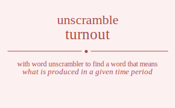

The word found after unscrambling turnout means that what is produced in a given time period, .

The word found after unscrambling turnout means that what is produced in a given time period, .
You can also find solutions for different combinations of letters in turnout like turnout turnotu turnuot turnuto turntou turntuo turonut turontu turount turoutn turotnu turotun turunot turunto turuont turuotn turutno turuton turtnou turtnuo turtonu turtoun turtuno turtuon tunrout tunrotu tunruot tunruto tunrtou tunrtuo tunorut tunortu tunourt tunoutr tunotru tunotur tunurot tunurto tunuort tunuotr tunutro tunutor tuntrou tuntruo tuntoru tuntour tunturo tuntuor tuornut tuorntu tuorunt tuorutn tuortnu tuortun tuonrut tuonrtu tuonurt tuonutr tuontru tuontur tuournt tuourtn tuounrt tuountr tuoutrn tuoutnr tuotrnu tuotrun tuotnru tuotnur tuoturn tuotunr tuurnot tuurnto tuuront tuurotn tuurtno tuurton tuunrot tuunrto tuunort tuunotr tuuntro tuuntor tuuornt tuuortn tuuonrt tuuontr tuuotrn tuuotnr tuutrno tuutron tuutnro tuutnor tuutorn tuutonr tutrnou tutrnuo tutronu tutroun tutruno tutruon tutnrou tutnruo tutnoru tutnour tutnuro tutnuor tutornu tutorun tutonru tutonur tutourn tutounr tuturno tuturon tutunro tutunor tutuorn tutuonr trunout trunotu trunuot trunuto truntou truntuo truonut truontu truount truoutn truotnu truotun truunot truunto truuont truuotn truutno truuton trutnou trutnuo trutonu trutoun trutuno trutuon trnuout trnuotu trnuuot trnuuto trnutou trnutuo trnouut trnoutu trnouut trnoutu trnotuu trnotuu trnuuot trnuuto trnuout trnuotu trnutuo trnutou trntuou trntuuo trntouu trntouu trntuuo trntuou trounut trountu trouunt trouutn troutnu troutun tronuut tronutu tronuut tronutu trontuu trontuu trouunt trouutn trounut trountu troutun troutnu trotunu trotuun trotnuu trotnuu trotuun trotunu truunot truunto truuont truuotn truutno truuton trunuot trunuto trunout trunotu truntuo truntou truount truoutn truonut truontu truotun truotnu trutuno trutuon trutnuo trutnou trutoun trutonu trtunou trtunuo trtuonu trtuoun trtuuno trtuuon trtnuou trtnuuo trtnouu trtnouu trtnuuo trtnuou trtounu trtouun trtonuu trtonuu trtouun trtounu trtuuno trtuuon trtunuo trtunou trtuoun trtuonu tnurout tnurotu tnuruot tnuruto tnurtou tnurtuo tnuorut tnuortu tnuourt tnuoutr tnuotru tnuotur tnuurot tnuurto tnuuort tnuuotr tnuutro tnuutor tnutrou tnutruo tnutoru tnutour tnuturo tnutuor tnruout tnruotu tnruuot tnruuto tnrutou tnrutuo tnrouut tnroutu tnrouut tnroutu tnrotuu tnrotuu tnruuot tnruuto tnruout tnruotu tnrutuo tnrutou tnrtuou tnrtuuo tnrtouu tnrtouu tnrtuuo tnrtuou tnourut tnourtu tnouurt tnouutr tnoutru tnoutur tnoruut tnorutu tnoruut tnorutu tnortuu tnortuu tnouurt tnouutr tnourut tnourtu tnoutur tnoutru tnoturu tnotuur tnotruu tnotruu tnotuur tnoturu tnuurot tnuurto tnuuort tnuuotr tnuutro tnuutor tnuruot tnuruto tnurout tnurotu tnurtuo tnurtou tnuourt tnuoutr tnuorut tnuortu tnuotur tnuotru tnuturo tnutuor tnutruo tnutrou tnutour tnutoru tnturou tnturuo tntuoru tntuour tntuuro tntuuor tntruou tntruuo tntrouu tntrouu tntruuo tntruou tntouru tntouur tntoruu tntoruu tntouur tntouru tntuuro tntuuor tnturuo tnturou tntuour tntuoru tournut tourntu tourunt tourutn tourtnu tourtun tounrut tounrtu tounurt tounutr tountru tountur touurnt touurtn touunrt touuntr touutrn touutnr toutrnu toutrun toutnru toutnur touturn toutunr torunut toruntu toruunt toruutn torutnu torutun tornuut tornutu tornuut tornutu torntuu torntuu toruunt toruutn torunut toruntu torutun torutnu tortunu tortuun tortnuu tortnuu tortuun tortunu tonurut tonurtu tonuurt tonuutr tonutru tonutur tonruut tonrutu tonruut tonrutu tonrtuu tonrtuu tonuurt tonuutr tonurut tonurtu tonutur tonutru tonturu tontuur tontruu tontruu tontuur tonturu touurnt touurtn touunrt touuntr touutrn touutnr tourunt tourutn tournut tourntu tourtun tourtnu tounurt tounutr tounrut tounrtu tountur tountru touturn toutunr toutrun toutrnu toutnur toutnru toturnu toturun totunru totunur totuurn totuunr totrunu totruun totrnuu totrnuu totruun totrunu totnuru totnuur totnruu totnruu totnuur totnuru totuurn totuunr toturun toturnu totunur totunru tuurnot tuurnto tuuront tuurotn tuurtno tuurton tuunrot tuunrto tuunort tuunotr tuuntro tuuntor tuuornt tuuortn tuuonrt tuuontr tuuotrn tuuotnr tuutrno tuutron tuutnro tuutnor tuutorn tuutonr turunot turunto turuont turuotn turutno turuton turnuot turnuto turnout turnotu turntuo turntou turount turoutn turonut turontu turotun turotnu turtuno turtuon turtnuo turtnou turtoun turtonu tunurot tunurto tunuort tunuotr tunutro tunutor tunruot tunruto tunrout tunrotu tunrtuo tunrtou tunourt tunoutr tunorut tunortu tunotur tunotru tunturo tuntuor tuntruo tuntrou tuntour tuntoru tuournt tuourtn tuounrt tuountr tuoutrn tuoutnr tuorunt tuorutn tuornut tuorntu tuortun tuortnu tuonurt tuonutr tuonrut tuonrtu tuontur tuontru tuoturn tuotunr tuotrun tuotrnu tuotnur tuotnru tuturno tuturon tutunro tutunor tutuorn tutuonr tutruno tutruon tutrnuo tutrnou tutroun tutronu tutnuro tutnuor tutnruo tutnrou tutnour tutnoru tutourn tutounr tutorun tutornu tutonur tutonru tturnou tturnuo tturonu tturoun tturuno tturuon ttunrou ttunruo ttunoru ttunour ttunuro ttunuor ttuornu ttuorun ttuonru ttuonur ttuourn ttuounr ttuurno ttuuron ttuunro ttuunor ttuuorn ttuuonr ttrunou ttrunuo ttruonu ttruoun ttruuno ttruuon ttrnuou ttrnuuo ttrnouu ttrnouu ttrnuuo ttrnuou ttrounu ttrouun ttronuu ttronuu ttrouun ttrounu ttruuno ttruuon ttrunuo ttrunou ttruoun ttruonu ttnurou ttnuruo ttnuoru ttnuour ttnuuro ttnuuor ttnruou ttnruuo ttnrouu ttnrouu ttnruuo ttnruou ttnouru ttnouur ttnoruu ttnoruu ttnouur ttnouru ttnuuro ttnuuor ttnuruo ttnurou ttnuour ttnuoru ttournu ttourun ttounru ttounur ttouurn ttouunr ttorunu ttoruun ttornuu ttornuu ttoruun ttorunu ttonuru ttonuur ttonruu ttonruu ttonuur ttonuru ttouurn ttouunr ttourun ttournu ttounur ttounru ttuurno ttuuron ttuunro ttuunor ttuuorn ttuuonr tturuno tturuon tturnuo tturnou tturoun tturonu ttunuro ttunuor ttunruo ttunrou ttunour ttunoru ttuourn ttuounr ttuorun ttuornu ttuonur ttuonru utrnout utrnotu utrnuot utrnuto utrntou utrntuo utronut utrontu utrount utroutn utrotnu utrotun utrunot utrunto utruont utruotn utrutno utruton utrtnou utrtnuo utrtonu utrtoun utrtuno utrtuon utnrout utnrotu utnruot utnruto utnrtou utnrtuo utnorut utnortu utnourt utnoutr utnotru utnotur utnurot utnurto utnuort utnuotr utnutro utnutor utntrou utntruo utntoru utntour utnturo utntuor utornut utorntu utorunt utorutn utortnu utortun utonrut utonrtu utonurt utonutr utontru utontur utournt utourtn utounrt utountr utoutrn utoutnr utotrnu utotrun utotnru utotnur utoturn utotunr uturnot uturnto uturont uturotn uturtno uturton utunrot utunrto utunort utunotr utuntro utuntor utuornt utuortn utuonrt utuontr utuotrn utuotnr ututrno ututron ututnro ututnor ututorn ututonr uttrnou uttrnuo uttronu uttroun uttruno uttruon uttnrou uttnruo uttnoru uttnour uttnuro uttnuor uttornu uttorun uttonru uttonur uttourn uttounr utturno utturon uttunro uttunor uttuorn uttuonr urtnout urtnotu urtnuot urtnuto urtntou urtntuo urtonut urtontu urtount urtoutn urtotnu urtotun urtunot urtunto urtuont urtuotn urtutno urtuton urttnou urttnuo urttonu urttoun urttuno urttuon urntout urntotu urntuot urntuto urnttou urnttuo urnotut urnottu urnoutt urnoutt urnottu urnotut urnutot urnutto urnuott urnuott urnutto urnutot urnttou urnttuo urntotu urntout urntuto urntuot urotnut urotntu urotunt urotutn urottnu urottun urontut uronttu uronutt uronutt uronttu urontut uroutnt urouttn urountt urountt urouttn uroutnt urottnu urottun urotntu urotnut urotutn urotunt urutnot urutnto urutont urutotn uruttno urutton uruntot uruntto urunott urunott uruntto uruntot uruotnt uruottn uruontt uruontt uruottn uruotnt uruttno urutton urutnto urutnot urutotn urutont urttnou urttnuo urttonu urttoun urttuno urttuon urtntou urtntuo urtnotu urtnout urtnuto urtnuot urtotnu urtotun urtontu urtonut urtoutn urtount urtutno urtuton urtunto urtunot urtuotn urtuont untrout untrotu untruot untruto untrtou untrtuo untorut untortu untourt untoutr untotru untotur unturot unturto untuort untuotr untutro untutor unttrou unttruo unttoru unttour untturo unttuor unrtout unrtotu unrtuot unrtuto unrttou unrttuo unrotut unrottu unroutt unroutt unrottu unrotut unrutot unrutto unruott unruott unrutto unrutot unrttou unrttuo unrtotu unrtout unrtuto unrtuot unotrut unotrtu unoturt unotutr unottru unottur unortut unorttu unorutt unorutt unorttu unortut unoutrt unouttr unourtt unourtt unouttr unoutrt unottru unottur unotrtu unotrut unotutr unoturt unutrot unutrto unutort unutotr unuttro unuttor unurtot unurtto unurott unurott unurtto unurtot unuotrt unuottr unuortt unuortt unuottr unuotrt unuttro unuttor unutrto unutrot unutotr unutort unttrou unttruo unttoru unttour untturo unttuor untrtou untrtuo untrotu untrout untruto untruot untotru untotur untortu untorut untoutr untourt untutro untutor unturto unturot untuotr untuort uotrnut uotrntu uotrunt uotrutn uotrtnu uotrtun uotnrut uotnrtu uotnurt uotnutr uotntru uotntur uoturnt uoturtn uotunrt uotuntr uotutrn uotutnr uottrnu uottrun uottnru uottnur uotturn uottunr uortnut uortntu uortunt uortutn uorttnu uorttun uorntut uornttu uornutt uornutt uornttu uorntut uorutnt uoruttn uoruntt uoruntt uoruttn uorutnt uorttnu uorttun uortntu uortnut uortutn uortunt uontrut uontrtu uonturt uontutr uonttru uonttur uonrtut uonrttu uonrutt uonrutt uonrttu uonrtut uonutrt uonuttr uonurtt uonurtt uonuttr uonutrt uonttru uonttur uontrtu uontrut uontutr uonturt uoutrnt uoutrtn uoutnrt uoutntr uouttrn uouttnr uourtnt uourttn uourntt uourntt uourttn uourtnt uountrt uounttr uounrtt uounrtt uounttr uountrt uouttrn uouttnr uoutrtn uoutrnt uoutntr uoutnrt uottrnu uottrun uottnru uottnur uotturn uottunr uotrtnu uotrtun uotrntu uotrnut uotrutn uotrunt uotntru uotntur uotnrtu uotnrut uotnutr uotnurt uotutrn uotutnr uoturtn uoturnt uotuntr uotunrt uutrnot uutrnto uutront uutrotn uutrtno uutrton uutnrot uutnrto uutnort uutnotr uutntro uutntor uutornt uutortn uutonrt uutontr uutotrn uutotnr uuttrno uuttron uuttnro uuttnor uuttorn uuttonr uurtnot uurtnto uurtont uurtotn uurttno uurtton uurntot uurntto uurnott uurnott uurntto uurntot uurotnt uurottn uurontt uurontt uurottn uurotnt uurttno uurtton uurtnto uurtnot uurtotn uurtont uuntrot uuntrto uuntort uuntotr uunttro uunttor uunrtot uunrtto uunrott uunrott uunrtto uunrtot uunotrt uunottr uunortt uunortt uunottr uunotrt uunttro uunttor uuntrto uuntrot uuntotr uuntort uuotrnt uuotrtn uuotnrt uuotntr uuottrn uuottnr uuortnt uuorttn uuorntt uuorntt uuorttn uuortnt uuontrt uuonttr uuonrtt uuonrtt uuonttr uuontrt uuottrn uuottnr uuotrtn uuotrnt uuotntr uuotnrt uuttrno uuttron uuttnro uuttnor uuttorn uuttonr uutrtno uutrton uutrnto uutrnot uutrotn uutront uutntro uutntor uutnrto uutnrot uutnotr uutnort uutotrn uutotnr uutortn uutornt uutontr uutonrt uttrnou uttrnuo uttronu uttroun uttruno uttruon uttnrou uttnruo uttnoru uttnour uttnuro uttnuor uttornu uttorun uttonru uttonur uttourn uttounr utturno utturon uttunro uttunor uttuorn uttuonr utrtnou utrtnuo utrtonu utrtoun utrtuno utrtuon utrntou utrntuo utrnotu utrnout utrnuto utrnuot utrotnu utrotun utrontu utronut utroutn utrount utrutno utruton utrunto utrunot utruotn utruont utntrou utntruo utntoru utntour utnturo utntuor utnrtou utnrtuo utnrotu utnrout utnruto utnruot utnotru utnotur utnortu utnorut utnoutr utnourt utnutro utnutor utnurto utnurot utnuotr utnuort utotrnu utotrun utotnru utotnur utoturn utotunr utortnu utortun utorntu utornut utorutn utorunt utontru utontur utonrtu utonrut utonutr utonurt utoutrn utoutnr utourtn utournt utountr utounrt ututrno ututron ututnro ututnor ututorn ututonr uturtno uturton uturnto uturnot uturotn uturont utuntro utuntor utunrto utunrot utunotr utunort utuotrn utuotnr utuortn utuornt utuontr utuonrt rtunout rtunotu rtunuot rtunuto rtuntou rtuntuo rtuonut rtuontu rtuount rtuoutn rtuotnu rtuotun rtuunot rtuunto rtuuont rtuuotn rtuutno rtuuton rtutnou rtutnuo rtutonu rtutoun rtutuno rtutuon rtnuout rtnuotu rtnuuot rtnuuto rtnutou rtnutuo rtnouut rtnoutu rtnouut rtnoutu rtnotuu rtnotuu rtnuuot rtnuuto rtnuout rtnuotu rtnutuo rtnutou rtntuou rtntuuo rtntouu rtntouu rtntuuo rtntuou rtounut rtountu rtouunt rtouutn rtoutnu rtoutun rtonuut rtonutu rtonuut rtonutu rtontuu rtontuu rtouunt rtouutn rtounut rtountu rtoutun rtoutnu rtotunu rtotuun rtotnuu rtotnuu rtotuun rtotunu rtuunot rtuunto rtuuont rtuuotn rtuutno rtuuton rtunuot rtunuto rtunout rtunotu rtuntuo rtuntou rtuount rtuoutn rtuonut rtuontu rtuotun rtuotnu rtutuno rtutuon rtutnuo rtutnou rtutoun rtutonu rttunou rttunuo rttuonu rttuoun rttuuno rttuuon rttnuou rttnuuo rttnouu rttnouu rttnuuo rttnuou rttounu rttouun rttonuu rttonuu rttouun rttounu rttuuno rttuuon rttunuo rttunou rttuoun rttuonu rutnout rutnotu rutnuot rutnuto rutntou rutntuo rutonut rutontu rutount rutoutn rutotnu rutotun rutunot rutunto rutuont rutuotn rututno rututon ruttnou ruttnuo ruttonu ruttoun ruttuno ruttuon runtout runtotu runtuot runtuto runttou runttuo runotut runottu runoutt runoutt runottu runotut runutot runutto runuott runuott runutto runutot runttou runttuo runtotu runtout runtuto runtuot ruotnut ruotntu ruotunt ruotutn ruottnu ruottun ruontut ruonttu ruonutt ruonutt ruonttu ruontut ruoutnt ruouttn ruountt ruountt ruouttn ruoutnt ruottnu ruottun ruotntu ruotnut ruotutn ruotunt ruutnot ruutnto ruutont ruutotn ruuttno ruutton ruuntot ruuntto ruunott ruunott ruuntto ruuntot ruuotnt ruuottn ruuontt ruuontt ruuottn ruuotnt ruuttno ruutton ruutnto ruutnot ruutotn ruutont ruttnou ruttnuo ruttonu ruttoun ruttuno ruttuon rutntou rutntuo rutnotu rutnout rutnuto rutnuot rutotnu rutotun rutontu rutonut rutoutn rutount rututno rututon rutunto rutunot rutuotn rutuont rntuout rntuotu rntuuot rntuuto rntutou rntutuo rntouut rntoutu rntouut rntoutu rntotuu rntotuu rntuuot rntuuto rntuout rntuotu rntutuo rntutou rnttuou rnttuuo rnttouu rnttouu rnttuuo rnttuou rnutout rnutotu rnutuot rnututo rnuttou rnuttuo rnuotut rnuottu rnuoutt rnuoutt rnuottu rnuotut rnuutot rnuutto rnuuott rnuuott rnuutto rnuutot rnuttou rnuttuo rnutotu rnutout rnututo rnutuot rnotuut rnotutu rnotuut rnotutu rnottuu rnottuu rnoutut rnouttu rnouutt rnouutt rnouttu rnoutut rnoutut rnouttu rnouutt rnouutt rnouttu rnoutut rnottuu rnottuu rnotutu rnotuut rnotutu rnotuut rnutuot rnututo rnutout rnutotu rnuttuo rnuttou rnuutot rnuutto rnuuott rnuuott rnuutto rnuutot rnuotut rnuottu rnuoutt rnuoutt rnuottu rnuotut rnuttuo rnuttou rnututo rnutuot rnutotu rnutout rnttuou rnttuuo rnttouu rnttouu rnttuuo rnttuou rntutou rntutuo rntuotu rntuout rntuuto rntuuot rntotuu rntotuu rntoutu rntouut rntoutu rntouut rntutuo rntutou rntuuto rntuuot rntuotu rntuout rotunut rotuntu rotuunt rotuutn rotutnu rotutun rotnuut rotnutu rotnuut rotnutu rotntuu rotntuu rotuunt rotuutn rotunut rotuntu rotutun rotutnu rottunu rottuun rottnuu rottnuu rottuun rottunu routnut routntu routunt roututn routtnu routtun rountut rounttu rounutt rounutt rounttu rountut rouutnt rouuttn rouuntt rouuntt rouuttn rouutnt routtnu routtun routntu routnut roututn routunt rontuut rontutu rontuut rontutu ronttuu ronttuu ronutut ronuttu ronuutt ronuutt ronuttu ronutut ronutut ronuttu ronuutt ronuutt ronuttu ronutut ronttuu ronttuu rontutu rontuut rontutu rontuut routunt roututn routnut routntu routtun routtnu rouutnt rouuttn rouuntt rouuntt rouuttn rouutnt rountut rounttu rounutt rounutt rounttu rountut routtun routtnu roututn routunt routntu routnut rottunu rottuun rottnuu rottnuu rottuun rottunu rotutnu rotutun rotuntu rotunut rotuutn rotuunt rotntuu rotntuu rotnutu rotnuut rotnutu rotnuut rotutun rotutnu rotuutn rotuunt rotuntu rotunut rutunot rutunto rutuont rutuotn rututno rututon rutnuot rutnuto rutnout rutnotu rutntuo rutntou rutount rutoutn rutonut rutontu rutotun rutotnu ruttuno ruttuon ruttnuo ruttnou ruttoun ruttonu ruutnot ruutnto ruutont ruutotn ruuttno ruutton ruuntot ruuntto ruunott ruunott ruuntto ruuntot ruuotnt ruuottn ruuontt ruuontt ruuottn ruuotnt ruuttno ruutton ruutnto ruutnot ruutotn ruutont runtuot runtuto runtout runtotu runttuo runttou runutot runutto runuott runuott runutto runutot runotut runottu runoutt runoutt runottu runotut runttuo runttou runtuto runtuot runtotu runtout ruotunt ruotutn ruotnut ruotntu ruottun ruottnu ruoutnt ruouttn ruountt ruountt ruouttn ruoutnt ruontut ruonttu ruonutt ruonutt ruonttu ruontut ruottun ruottnu ruotutn ruotunt ruotntu ruotnut ruttuno ruttuon ruttnuo ruttnou ruttoun ruttonu rututno rututon rutunto rutunot rutuotn rutuont rutntuo rutntou rutnuto rutnuot rutnotu rutnout rutotun rutotnu rutoutn rutount rutontu rutonut rttunou rttunuo rttuonu rttuoun rttuuno rttuuon rttnuou rttnuuo rttnouu rttnouu rttnuuo rttnuou rttounu rttouun rttonuu rttonuu rttouun rttounu rttuuno rttuuon rttunuo rttunou rttuoun rttuonu rtutnou rtutnuo rtutonu rtutoun rtutuno rtutuon rtuntou rtuntuo rtunotu rtunout rtunuto rtunuot rtuotnu rtuotun rtuontu rtuonut rtuoutn rtuount rtuutno rtuuton rtuunto rtuunot rtuuotn rtuuont rtntuou rtntuuo rtntouu rtntouu rtntuuo rtntuou rtnutou rtnutuo rtnuotu rtnuout rtnuuto rtnuuot rtnotuu rtnotuu rtnoutu rtnouut rtnoutu rtnouut rtnutuo rtnutou rtnuuto rtnuuot rtnuotu rtnuout rtotunu rtotuun rtotnuu rtotnuu rtotuun rtotunu rtoutnu rtoutun rtountu rtounut rtouutn rtouunt rtontuu rtontuu rtonutu rtonuut rtonutu rtonuut rtoutun rtoutnu rtouutn rtouunt rtountu rtounut rtutuno rtutuon rtutnuo rtutnou rtutoun rtutonu rtuutno rtuuton rtuunto rtuunot rtuuotn rtuuont rtuntuo rtuntou rtunuto rtunuot rtunotu rtunout rtuotun rtuotnu rtuoutn rtuount rtuontu rtuonut nturout nturotu nturuot nturuto nturtou nturtuo ntuorut ntuortu ntuourt ntuoutr ntuotru ntuotur ntuurot ntuurto ntuuort ntuuotr ntuutro ntuutor ntutrou ntutruo ntutoru ntutour ntuturo ntutuor ntruout ntruotu ntruuot ntruuto ntrutou ntrutuo ntrouut ntroutu ntrouut ntroutu ntrotuu ntrotuu ntruuot ntruuto ntruout ntruotu ntrutuo ntrutou ntrtuou ntrtuuo ntrtouu ntrtouu ntrtuuo ntrtuou ntourut ntourtu ntouurt ntouutr ntoutru ntoutur ntoruut ntorutu ntoruut ntorutu ntortuu ntortuu ntouurt ntouutr ntourut ntourtu ntoutur ntoutru ntoturu ntotuur ntotruu ntotruu ntotuur ntoturu ntuurot ntuurto ntuuort ntuuotr ntuutro ntuutor nturuot nturuto nturout nturotu nturtuo nturtou ntuourt ntuoutr ntuorut ntuortu ntuotur ntuotru ntuturo ntutuor ntutruo ntutrou ntutour ntutoru ntturou ntturuo nttuoru nttuour nttuuro nttuuor nttruou nttruuo nttrouu nttrouu nttruuo nttruou nttouru nttouur nttoruu nttoruu nttouur nttouru nttuuro nttuuor ntturuo ntturou nttuour nttuoru nutrout nutrotu nutruot nutruto nutrtou nutrtuo nutorut nutortu nutourt nutoutr nutotru nutotur nuturot nuturto nutuort nutuotr nututro nututor nuttrou nuttruo nuttoru nuttour nutturo nuttuor nurtout nurtotu nurtuot nurtuto nurttou nurttuo nurotut nurottu nuroutt nuroutt nurottu nurotut nurutot nurutto nuruott nuruott nurutto nurutot nurttou nurttuo nurtotu nurtout nurtuto nurtuot nuotrut nuotrtu nuoturt nuotutr nuottru nuottur nuortut nuorttu nuorutt nuorutt nuorttu nuortut nuoutrt nuouttr nuourtt nuourtt nuouttr nuoutrt nuottru nuottur nuotrtu nuotrut nuotutr nuoturt nuutrot nuutrto nuutort nuutotr nuuttro nuuttor nuurtot nuurtto nuurott nuurott nuurtto nuurtot nuuotrt nuuottr nuuortt nuuortt nuuottr nuuotrt nuuttro nuuttor nuutrto nuutrot nuutotr nuutort nuttrou nuttruo nuttoru nuttour nutturo nuttuor nutrtou nutrtuo nutrotu nutrout nutruto nutruot nutotru nutotur nutortu nutorut nutoutr nutourt nututro nututor nuturto nuturot nutuotr nutuort nrtuout nrtuotu nrtuuot nrtuuto nrtutou nrtutuo nrtouut nrtoutu nrtouut nrtoutu nrtotuu nrtotuu nrtuuot nrtuuto nrtuout nrtuotu nrtutuo nrtutou nrttuou nrttuuo nrttouu nrttouu nrttuuo nrttuou nrutout nrutotu nrutuot nrututo nruttou nruttuo nruotut nruottu nruoutt nruoutt nruottu nruotut nruutot nruutto nruuott nruuott nruutto nruutot nruttou nruttuo nrutotu nrutout nrututo nrutuot nrotuut nrotutu nrotuut nrotutu nrottuu nrottuu nroutut nrouttu nrouutt nrouutt nrouttu nroutut nroutut nrouttu nrouutt nrouutt nrouttu nroutut nrottuu nrottuu nrotutu nrotuut nrotutu nrotuut nrutuot nrututo nrutout nrutotu nruttuo nruttou nruutot nruutto nruuott nruuott nruutto nruutot nruotut nruottu nruoutt nruoutt nruottu nruotut nruttuo nruttou nrututo nrutuot nrutotu nrutout nrttuou nrttuuo nrttouu nrttouu nrttuuo nrttuou nrtutou nrtutuo nrtuotu nrtuout nrtuuto nrtuuot nrtotuu nrtotuu nrtoutu nrtouut nrtoutu nrtouut nrtutuo nrtutou nrtuuto nrtuuot nrtuotu nrtuout noturut noturtu notuurt notuutr notutru notutur notruut notrutu notruut notrutu notrtuu notrtuu notuurt notuutr noturut noturtu notutur notutru notturu nottuur nottruu nottruu nottuur notturu noutrut noutrtu nouturt noututr nouttru nouttur nourtut nourttu nourutt nourutt nourttu nourtut nouutrt nouuttr nouurtt nouurtt nouuttr nouutrt nouttru nouttur noutrtu noutrut noututr nouturt nortuut nortutu nortuut nortutu norttuu norttuu norutut noruttu noruutt noruutt noruttu norutut norutut noruttu noruutt noruutt noruttu norutut norttuu norttuu nortutu nortuut nortutu nortuut nouturt noututr noutrut noutrtu nouttur nouttru nouutrt nouuttr nouurtt nouurtt nouuttr nouutrt nourtut nourttu nourutt nourutt nourttu nourtut nouttur nouttru noututr nouturt noutrtu noutrut notturu nottuur nottruu nottruu nottuur notturu notutru notutur noturtu noturut notuutr notuurt notrtuu notrtuu notrutu notruut notrutu notruut notutur notutru notuutr notuurt noturtu noturut nuturot nuturto nutuort nutuotr nututro nututor nutruot nutruto nutrout nutrotu nutrtuo nutrtou nutourt nutoutr nutorut nutortu nutotur nutotru nutturo nuttuor nuttruo nuttrou nuttour nuttoru nuutrot nuutrto nuutort nuutotr nuuttro nuuttor nuurtot nuurtto nuurott nuurott nuurtto nuurtot nuuotrt nuuottr nuuortt nuuortt nuuottr nuuotrt nuuttro nuuttor nuutrto nuutrot nuutotr nuutort nurtuot nurtuto nurtout nurtotu nurttuo nurttou nurutot nurutto nuruott nuruott nurutto nurutot nurotut nurottu nuroutt nuroutt nurottu nurotut nurttuo nurttou nurtuto nurtuot nurtotu nurtout nuoturt nuotutr nuotrut nuotrtu nuottur nuottru nuoutrt nuouttr nuourtt nuourtt nuouttr nuoutrt nuortut nuorttu nuorutt nuorutt nuorttu nuortut nuottur nuottru nuotutr nuoturt nuotrtu nuotrut nutturo nuttuor nuttruo nuttrou nuttour nuttoru nututro nututor nuturto nuturot nutuotr nutuort nutrtuo nutrtou nutruto nutruot nutrotu nutrout nutotur nutotru nutoutr nutourt nutortu nutorut ntturou ntturuo nttuoru nttuour nttuuro nttuuor nttruou nttruuo nttrouu nttrouu nttruuo nttruou nttouru nttouur nttoruu nttoruu nttouur nttouru nttuuro nttuuor ntturuo ntturou nttuour nttuoru ntutrou ntutruo ntutoru ntutour ntuturo ntutuor nturtou nturtuo nturotu nturout nturuto nturuot ntuotru ntuotur ntuortu ntuorut ntuoutr ntuourt ntuutro ntuutor ntuurto ntuurot ntuuotr ntuuort ntrtuou ntrtuuo ntrtouu ntrtouu ntrtuuo ntrtuou ntrutou ntrutuo ntruotu ntruout ntruuto ntruuot ntrotuu ntrotuu ntroutu ntrouut ntroutu ntrouut ntrutuo ntrutou ntruuto ntruuot ntruotu ntruout ntoturu ntotuur ntotruu ntotruu ntotuur ntoturu ntoutru ntoutur ntourtu ntourut ntouutr ntouurt ntortuu ntortuu ntorutu ntoruut ntorutu ntoruut ntoutur ntoutru ntouutr ntouurt ntourtu ntourut ntuturo ntutuor ntutruo ntutrou ntutour ntutoru ntuutro ntuutor ntuurto ntuurot ntuuotr ntuuort nturtuo nturtou nturuto nturuot nturotu nturout ntuotur ntuotru ntuoutr ntuourt ntuortu ntuorut oturnut oturntu oturunt oturutn oturtnu oturtun otunrut otunrtu otunurt otunutr otuntru otuntur otuurnt otuurtn otuunrt otuuntr otuutrn otuutnr otutrnu otutrun otutnru otutnur otuturn otutunr otrunut otruntu otruunt otruutn otrutnu otrutun otrnuut otrnutu otrnuut otrnutu otrntuu otrntuu otruunt otruutn otrunut otruntu otrutun otrutnu otrtunu otrtuun otrtnuu otrtnuu otrtuun otrtunu otnurut otnurtu otnuurt otnuutr otnutru otnutur otnruut otnrutu otnruut otnrutu otnrtuu otnrtuu otnuurt otnuutr otnurut otnurtu otnutur otnutru otnturu otntuur otntruu otntruu otntuur otnturu otuurnt otuurtn otuunrt otuuntr otuutrn otuutnr oturunt oturutn oturnut oturntu oturtun oturtnu otunurt otunutr otunrut otunrtu otuntur otuntru otuturn otutunr otutrun otutrnu otutnur otutnru otturnu otturun ottunru ottunur ottuurn ottuunr ottrunu ottruun ottrnuu ottrnuu ottruun ottrunu ottnuru ottnuur ottnruu ottnruu ottnuur ottnuru ottuurn ottuunr otturun otturnu ottunur ottunru outrnut outrntu outrunt outrutn outrtnu outrtun outnrut outnrtu outnurt outnutr outntru outntur outurnt outurtn outunrt outuntr oututrn oututnr outtrnu outtrun outtnru outtnur outturn outtunr ourtnut ourtntu ourtunt ourtutn ourttnu ourttun ourntut ournttu ournutt ournutt ournttu ourntut ourutnt ouruttn ouruntt ouruntt ouruttn ourutnt ourttnu ourttun ourtntu ourtnut ourtutn ourtunt ountrut ountrtu ounturt ountutr ounttru ounttur ounrtut ounrttu ounrutt ounrutt ounrttu ounrtut ounutrt ounuttr ounurtt ounurtt ounuttr ounutrt ounttru ounttur ountrtu ountrut ountutr ounturt ouutrnt ouutrtn ouutnrt ouutntr ouuttrn ouuttnr ouurtnt ouurttn ouurntt ouurntt ouurttn ouurtnt ouuntrt ouunttr ouunrtt ouunrtt ouunttr ouuntrt ouuttrn ouuttnr ouutrtn ouutrnt ouutntr ouutnrt outtrnu outtrun outtnru outtnur outturn outtunr outrtnu outrtun outrntu outrnut outrutn outrunt outntru outntur outnrtu outnrut outnutr outnurt oututrn oututnr outurtn outurnt outuntr outunrt ortunut ortuntu ortuunt ortuutn ortutnu ortutun ortnuut ortnutu ortnuut ortnutu ortntuu ortntuu ortuunt ortuutn ortunut ortuntu ortutun ortutnu orttunu orttuun orttnuu orttnuu orttuun orttunu orutnut orutntu orutunt orututn oruttnu oruttun oruntut orunttu orunutt orunutt orunttu oruntut oruutnt oruuttn oruuntt oruuntt oruuttn oruutnt oruttnu oruttun orutntu orutnut orututn orutunt orntuut orntutu orntuut orntutu ornttuu ornttuu ornutut ornuttu ornuutt ornuutt ornuttu ornutut ornutut ornuttu ornuutt ornuutt ornuttu ornutut ornttuu ornttuu orntutu orntuut orntutu orntuut orutunt orututn orutnut orutntu oruttun oruttnu oruutnt oruuttn oruuntt oruuntt oruuttn oruutnt oruntut orunttu orunutt orunutt orunttu oruntut oruttun oruttnu orututn orutunt orutntu orutnut orttunu orttuun orttnuu orttnuu orttuun orttunu ortutnu ortutun ortuntu ortunut ortuutn ortuunt ortntuu ortntuu ortnutu ortnuut ortnutu ortnuut ortutun ortutnu ortuutn ortuunt ortuntu ortunut onturut onturtu ontuurt ontuutr ontutru ontutur ontruut ontrutu ontruut ontrutu ontrtuu ontrtuu ontuurt ontuutr onturut onturtu ontutur ontutru ontturu onttuur onttruu onttruu onttuur ontturu onutrut onutrtu onuturt onututr onuttru onuttur onurtut onurttu onurutt onurutt onurttu onurtut onuutrt onuuttr onuurtt onuurtt onuuttr onuutrt onuttru onuttur onutrtu onutrut onututr onuturt onrtuut onrtutu onrtuut onrtutu onrttuu onrttuu onrutut onruttu onruutt onruutt onruttu onrutut onrutut onruttu onruutt onruutt onruttu onrutut onrttuu onrttuu onrtutu onrtuut onrtutu onrtuut onuturt onututr onutrut onutrtu onuttur onuttru onuutrt onuuttr onuurtt onuurtt onuuttr onuutrt onurtut onurttu onurutt onurutt onurttu onurtut onuttur onuttru onututr onuturt onutrtu onutrut ontturu onttuur onttruu onttruu onttuur ontturu ontutru ontutur onturtu onturut ontuutr ontuurt ontrtuu ontrtuu ontrutu ontruut ontrutu ontruut ontutur ontutru ontuutr ontuurt onturtu onturut outurnt outurtn outunrt outuntr oututrn oututnr outrunt outrutn outrnut outrntu outrtun outrtnu outnurt outnutr outnrut outnrtu outntur outntru outturn outtunr outtrun outtrnu outtnur outtnru ouutrnt ouutrtn ouutnrt ouutntr ouuttrn ouuttnr ouurtnt ouurttn ouurntt ouurntt ouurttn ouurtnt ouuntrt ouunttr ouunrtt ouunrtt ouunttr ouuntrt ouuttrn ouuttnr ouutrtn ouutrnt ouutntr ouutnrt ourtunt ourtutn ourtnut ourtntu ourttun ourttnu ourutnt ouruttn ouruntt ouruntt ouruttn ourutnt ourntut ournttu ournutt ournutt ournttu ourntut ourttun ourttnu ourtutn ourtunt ourtntu ourtnut ounturt ountutr ountrut ountrtu ounttur ounttru ounutrt ounuttr ounurtt ounurtt ounuttr ounutrt ounrtut ounrttu ounrutt ounrutt ounrttu ounrtut ounttur ounttru ountutr ounturt ountrtu ountrut outturn outtunr outtrun outtrnu outtnur outtnru oututrn oututnr outurtn outurnt outuntr outunrt outrtun outrtnu outrutn outrunt outrntu outrnut outntur outntru outnutr outnurt outnrtu outnrut otturnu otturun ottunru ottunur ottuurn ottuunr ottrunu ottruun ottrnuu ottrnuu ottruun ottrunu ottnuru ottnuur ottnruu ottnruu ottnuur ottnuru ottuurn ottuunr otturun otturnu ottunur ottunru otutrnu otutrun otutnru otutnur otuturn otutunr oturtnu oturtun oturntu oturnut oturutn oturunt otuntru otuntur otunrtu otunrut otunutr otunurt otuutrn otuutnr otuurtn otuurnt otuuntr otuunrt otrtunu otrtuun otrtnuu otrtnuu otrtuun otrtunu otrutnu otrutun otruntu otrunut otruutn otruunt otrntuu otrntuu otrnutu otrnuut otrnutu otrnuut otrutun otrutnu otruutn otruunt otruntu otrunut otnturu otntuur otntruu otntruu otntuur otnturu otnutru otnutur otnurtu otnurut otnuutr otnuurt otnrtuu otnrtuu otnrutu otnruut otnrutu otnruut otnutur otnutru otnuutr otnuurt otnurtu otnurut otuturn otutunr otutrun otutrnu otutnur otutnru otuutrn otuutnr otuurtn otuurnt otuuntr otuunrt oturtun oturtnu oturutn oturunt oturntu oturnut otuntur otuntru otunutr otunurt otunrtu otunrut uturnot uturnto uturont uturotn uturtno uturton utunrot utunrto utunort utunotr utuntro utuntor utuornt utuortn utuonrt utuontr utuotrn utuotnr ututrno ututron ututnro ututnor ututorn ututonr utrunot utrunto utruont utruotn utrutno utruton utrnuot utrnuto utrnout utrnotu utrntuo utrntou utrount utroutn utronut utrontu utrotun utrotnu utrtuno utrtuon utrtnuo utrtnou utrtoun utrtonu utnurot utnurto utnuort utnuotr utnutro utnutor utnruot utnruto utnrout utnrotu utnrtuo utnrtou utnourt utnoutr utnorut utnortu utnotur utnotru utnturo utntuor utntruo utntrou utntour utntoru utournt utourtn utounrt utountr utoutrn utoutnr utorunt utorutn utornut utorntu utortun utortnu utonurt utonutr utonrut utonrtu utontur utontru utoturn utotunr utotrun utotrnu utotnur utotnru utturno utturon uttunro uttunor uttuorn uttuonr uttruno uttruon uttrnuo uttrnou uttroun uttronu uttnuro uttnuor uttnruo uttnrou uttnour uttnoru uttourn uttounr uttorun uttornu uttonur uttonru uutrnot uutrnto uutront uutrotn uutrtno uutrton uutnrot uutnrto uutnort uutnotr uutntro uutntor uutornt uutortn uutonrt uutontr uutotrn uutotnr uuttrno uuttron uuttnro uuttnor uuttorn uuttonr uurtnot uurtnto uurtont uurtotn uurttno uurtton uurntot uurntto uurnott uurnott uurntto uurntot uurotnt uurottn uurontt uurontt uurottn uurotnt uurttno uurtton uurtnto uurtnot uurtotn uurtont uuntrot uuntrto uuntort uuntotr uunttro uunttor uunrtot uunrtto uunrott uunrott uunrtto uunrtot uunotrt uunottr uunortt uunortt uunottr uunotrt uunttro uunttor uuntrto uuntrot uuntotr uuntort uuotrnt uuotrtn uuotnrt uuotntr uuottrn uuottnr uuortnt uuorttn uuorntt uuorntt uuorttn uuortnt uuontrt uuonttr uuonrtt uuonrtt uuonttr uuontrt uuottrn uuottnr uuotrtn uuotrnt uuotntr uuotnrt uuttrno uuttron uuttnro uuttnor uuttorn uuttonr uutrtno uutrton uutrnto uutrnot uutrotn uutront uutntro uutntor uutnrto uutnrot uutnotr uutnort uutotrn uutotnr uutortn uutornt uutontr uutonrt urtunot urtunto urtuont urtuotn urtutno urtuton urtnuot urtnuto urtnout urtnotu urtntuo urtntou urtount urtoutn urtonut urtontu urtotun urtotnu urttuno urttuon urttnuo urttnou urttoun urttonu urutnot urutnto urutont urutotn uruttno urutton uruntot uruntto urunott urunott uruntto uruntot uruotnt uruottn uruontt uruontt uruottn uruotnt uruttno urutton urutnto urutnot urutotn urutont urntuot urntuto urntout urntotu urnttuo urnttou urnutot urnutto urnuott urnuott urnutto urnutot urnotut urnottu urnoutt urnoutt urnottu urnotut urnttuo urnttou urntuto urntuot urntotu urntout urotunt urotutn urotnut urotntu urottun urottnu uroutnt urouttn urountt urountt urouttn uroutnt urontut uronttu uronutt uronutt uronttu urontut urottun urottnu urotutn urotunt urotntu urotnut urttuno urttuon urttnuo urttnou urttoun urttonu urtutno urtuton urtunto urtunot urtuotn urtuont urtntuo urtntou urtnuto urtnuot urtnotu urtnout urtotun urtotnu urtoutn urtount urtontu urtonut unturot unturto untuort untuotr untutro untutor untruot untruto untrout untrotu untrtuo untrtou untourt untoutr untorut untortu untotur untotru untturo unttuor unttruo unttrou unttour unttoru unutrot unutrto unutort unutotr unuttro unuttor unurtot unurtto unurott unurott unurtto unurtot unuotrt unuottr unuortt unuortt unuottr unuotrt unuttro unuttor unutrto unutrot unutotr unutort unrtuot unrtuto unrtout unrtotu unrttuo unrttou unrutot unrutto unruott unruott unrutto unrutot unrotut unrottu unroutt unroutt unrottu unrotut unrttuo unrttou unrtuto unrtuot unrtotu unrtout unoturt unotutr unotrut unotrtu unottur unottru unoutrt unouttr unourtt unourtt unouttr unoutrt unortut unorttu unorutt unorutt unorttu unortut unottur unottru unotutr unoturt unotrtu unotrut untturo unttuor unttruo unttrou unttour unttoru untutro untutor unturto unturot untuotr untuort untrtuo untrtou untruto untruot untrotu untrout untotur untotru untoutr untourt untortu untorut uoturnt uoturtn uotunrt uotuntr uotutrn uotutnr uotrunt uotrutn uotrnut uotrntu uotrtun uotrtnu uotnurt uotnutr uotnrut uotnrtu uotntur uotntru uotturn uottunr uottrun uottrnu uottnur uottnru uoutrnt uoutrtn uoutnrt uoutntr uouttrn uouttnr uourtnt uourttn uourntt uourntt uourttn uourtnt uountrt uounttr uounrtt uounrtt uounttr uountrt uouttrn uouttnr uoutrtn uoutrnt uoutntr uoutnrt uortunt uortutn uortnut uortntu uorttun uorttnu uorutnt uoruttn uoruntt uoruntt uoruttn uorutnt uorntut uornttu uornutt uornutt uornttu uorntut uorttun uorttnu uortutn uortunt uortntu uortnut uonturt uontutr uontrut uontrtu uonttur uonttru uonutrt uonuttr uonurtt uonurtt uonuttr uonutrt uonrtut uonrttu uonrutt uonrutt uonrttu uonrtut uonttur uonttru uontutr uonturt uontrtu uontrut uotturn uottunr uottrun uottrnu uottnur uottnru uotutrn uotutnr uoturtn uoturnt uotuntr uotunrt uotrtun uotrtnu uotrutn uotrunt uotrntu uotrnut uotntur uotntru uotnutr uotnurt uotnrtu uotnrut utturno utturon uttunro uttunor uttuorn uttuonr uttruno uttruon uttrnuo uttrnou uttroun uttronu uttnuro uttnuor uttnruo uttnrou uttnour uttnoru uttourn uttounr uttorun uttornu uttonur uttonru ututrno ututron ututnro ututnor ututorn ututonr uturtno uturton uturnto uturnot uturotn uturont utuntro utuntor utunrto utunrot utunotr utunort utuotrn utuotnr utuortn utuornt utuontr utuonrt utrtuno utrtuon utrtnuo utrtnou utrtoun utrtonu utrutno utruton utrunto utrunot utruotn utruont utrntuo utrntou utrnuto utrnuot utrnotu utrnout utrotun utrotnu utroutn utrount utrontu utronut utnturo utntuor utntruo utntrou utntour utntoru utnutro utnutor utnurto utnurot utnuotr utnuort utnrtuo utnrtou utnruto utnruot utnrotu utnrout utnotur utnotru utnoutr utnourt utnortu utnorut utoturn utotunr utotrun utotrnu utotnur utotnru utoutrn utoutnr utourtn utournt utountr utounrt utortun utortnu utorutn utorunt utorntu utornut utontur utontru utonutr utonurt utonrtu utonrut tturnou tturnuo tturonu tturoun tturuno tturuon ttunrou ttunruo ttunoru ttunour ttunuro ttunuor ttuornu ttuorun ttuonru ttuonur ttuourn ttuounr ttuurno ttuuron ttuunro ttuunor ttuuorn ttuuonr ttrunou ttrunuo ttruonu ttruoun ttruuno ttruuon ttrnuou ttrnuuo ttrnouu ttrnouu ttrnuuo ttrnuou ttrounu ttrouun ttronuu ttronuu ttrouun ttrounu ttruuno ttruuon ttrunuo ttrunou ttruoun ttruonu ttnurou ttnuruo ttnuoru ttnuour ttnuuro ttnuuor ttnruou ttnruuo ttnrouu ttnrouu ttnruuo ttnruou ttnouru ttnouur ttnoruu ttnoruu ttnouur ttnouru ttnuuro ttnuuor ttnuruo ttnurou ttnuour ttnuoru ttournu ttourun ttounru ttounur ttouurn ttouunr ttorunu ttoruun ttornuu ttornuu ttoruun ttorunu ttonuru ttonuur ttonruu ttonruu ttonuur ttonuru ttouurn ttouunr ttourun ttournu ttounur ttounru ttuurno ttuuron ttuunro ttuunor ttuuorn ttuuonr tturuno tturuon tturnuo tturnou tturoun tturonu ttunuro ttunuor ttunruo ttunrou ttunour ttunoru ttuourn ttuounr ttuorun ttuornu ttuonur ttuonru tutrnou tutrnuo tutronu tutroun tutruno tutruon tutnrou tutnruo tutnoru tutnour tutnuro tutnuor tutornu tutorun tutonru tutonur tutourn tutounr tuturno tuturon tutunro tutunor tutuorn tutuonr turtnou turtnuo turtonu turtoun turtuno turtuon turntou turntuo turnotu turnout turnuto turnuot turotnu turotun turontu turonut turoutn turount turutno turuton turunto turunot turuotn turuont tuntrou tuntruo tuntoru tuntour tunturo tuntuor tunrtou tunrtuo tunrotu tunrout tunruto tunruot tunotru tunotur tunortu tunorut tunoutr tunourt tunutro tunutor tunurto tunurot tunuotr tunuort tuotrnu tuotrun tuotnru tuotnur tuoturn tuotunr tuortnu tuortun tuorntu tuornut tuorutn tuorunt tuontru tuontur tuonrtu tuonrut tuonutr tuonurt tuoutrn tuoutnr tuourtn tuournt tuountr tuounrt tuutrno tuutron tuutnro tuutnor tuutorn tuutonr tuurtno tuurton tuurnto tuurnot tuurotn tuuront tuuntro tuuntor tuunrto tuunrot tuunotr tuunort tuuotrn tuuotnr tuuortn tuuornt tuuontr tuuonrt trtunou trtunuo trtuonu trtuoun trtuuno trtuuon trtnuou trtnuuo trtnouu trtnouu trtnuuo trtnuou trtounu trtouun trtonuu trtonuu trtouun trtounu trtuuno trtuuon trtunuo trtunou trtuoun trtuonu trutnou trutnuo trutonu trutoun trutuno trutuon truntou truntuo trunotu trunout trunuto trunuot truotnu truotun truontu truonut truoutn truount truutno truuton truunto truunot truuotn truuont trntuou trntuuo trntouu trntouu trntuuo trntuou trnutou trnutuo trnuotu trnuout trnuuto trnuuot trnotuu trnotuu trnoutu trnouut trnoutu trnouut trnutuo trnutou trnuuto trnuuot trnuotu trnuout trotunu trotuun trotnuu trotnuu trotuun trotunu troutnu troutun trountu trounut trouutn trouunt trontuu trontuu tronutu tronuut tronutu tronuut troutun troutnu trouutn trouunt trountu trounut trutuno trutuon trutnuo trutnou trutoun trutonu truutno truuton truunto truunot truuotn truuont truntuo truntou trunuto trunuot trunotu trunout truotun truotnu truoutn truount truontu truonut tnturou tnturuo tntuoru tntuour tntuuro tntuuor tntruou tntruuo tntrouu tntrouu tntruuo tntruou tntouru tntouur tntoruu tntoruu tntouur tntouru tntuuro tntuuor tnturuo tnturou tntuour tntuoru tnutrou tnutruo tnutoru tnutour tnuturo tnutuor tnurtou tnurtuo tnurotu tnurout tnuruto tnuruot tnuotru tnuotur tnuortu tnuorut tnuoutr tnuourt tnuutro tnuutor tnuurto tnuurot tnuuotr tnuuort tnrtuou tnrtuuo tnrtouu tnrtouu tnrtuuo tnrtuou tnrutou tnrutuo tnruotu tnruout tnruuto tnruuot tnrotuu tnrotuu tnroutu tnrouut tnroutu tnrouut tnrutuo tnrutou tnruuto tnruuot tnruotu tnruout tnoturu tnotuur tnotruu tnotruu tnotuur tnoturu tnoutru tnoutur tnourtu tnourut tnouutr tnouurt tnortuu tnortuu tnorutu tnoruut tnorutu tnoruut tnoutur tnoutru tnouutr tnouurt tnourtu tnourut tnuturo tnutuor tnutruo tnutrou tnutour tnutoru tnuutro tnuutor tnuurto tnuurot tnuuotr tnuuort tnurtuo tnurtou tnuruto tnuruot tnurotu tnurout tnuotur tnuotru tnuoutr tnuourt tnuortu tnuorut toturnu toturun totunru totunur totuurn totuunr totrunu totruun totrnuu totrnuu totruun totrunu totnuru totnuur totnruu totnruu totnuur totnuru totuurn totuunr toturun toturnu totunur totunru toutrnu toutrun toutnru toutnur touturn toutunr tourtnu tourtun tourntu tournut tourutn tourunt tountru tountur tounrtu tounrut tounutr tounurt touutrn touutnr touurtn touurnt touuntr touunrt tortunu tortuun tortnuu tortnuu tortuun tortunu torutnu torutun toruntu torunut toruutn toruunt torntuu torntuu tornutu tornuut tornutu tornuut torutun torutnu toruutn toruunt toruntu torunut tonturu tontuur tontruu tontruu tontuur tonturu tonutru tonutur tonurtu tonurut tonuutr tonuurt tonrtuu tonrtuu tonrutu tonruut tonrutu tonruut tonutur tonutru tonuutr tonuurt tonurtu tonurut touturn toutunr toutrun toutrnu toutnur toutnru touutrn touutnr touurtn touurnt touuntr touunrt tourtun tourtnu tourutn tourunt tourntu tournut tountur tountru tounutr tounurt tounrtu tounrut tuturno tuturon tutunro tutunor tutuorn tutuonr tutruno tutruon tutrnuo tutrnou tutroun tutronu tutnuro tutnuor tutnruo tutnrou tutnour tutnoru tutourn tutounr tutorun tutornu tutonur tutonru tuutrno tuutron tuutnro tuutnor tuutorn tuutonr tuurtno tuurton tuurnto tuurnot tuurotn tuuront tuuntro tuuntor tuunrto tuunrot tuunotr tuunort tuuotrn tuuotnr tuuortn tuuornt tuuontr tuuonrt turtuno turtuon turtnuo turtnou turtoun turtonu turutno turuton turunto turunot turuotn turuont turntuo turntou turnuto turnuot turnotu turnout turotun turotnu turoutn turount turontu turonut tunturo tuntuor tuntruo tuntrou tuntour tuntoru tunutro tunutor tunurto tunurot tunuotr tunuort tunrtuo tunrtou tunruto tunruot tunrotu tunrout tunotur tunotru tunoutr tunourt tunortu tunorut tuoturn tuotunr tuotrun tuotrnu tuotnur tuotnru tuoutrn tuoutnr tuourtn tuournt tuountr tuounrt tuortun tuortnu tuorutn tuorunt tuorntu tuornut tuontur tuontru tuonutr tuonurt tuonrtu tuonrut.
Unscramble Words is registered trademark.